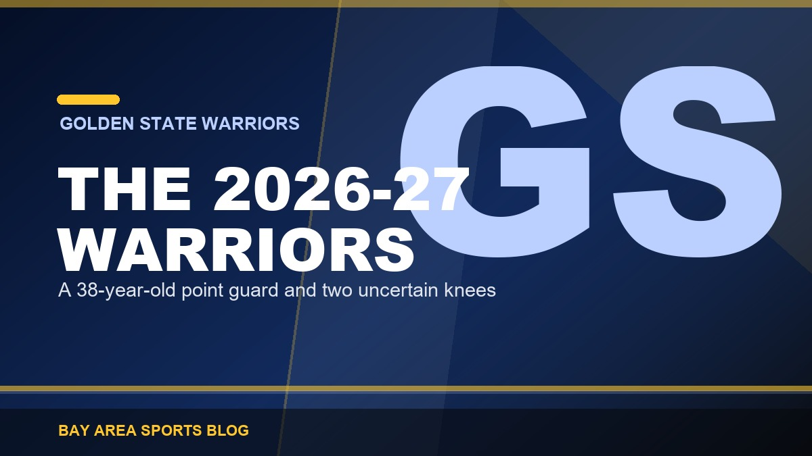
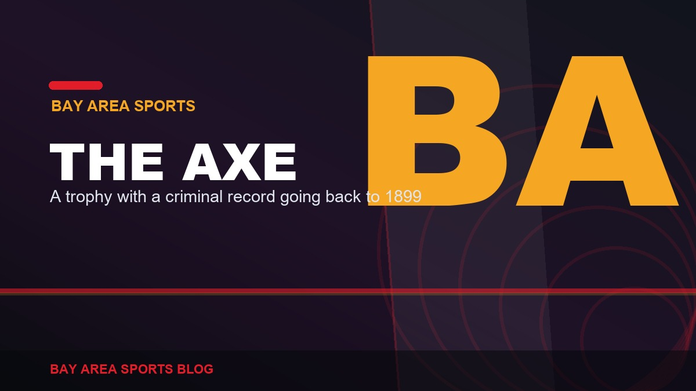
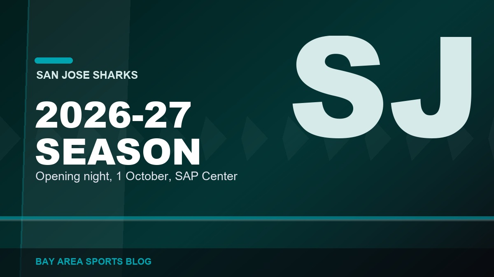
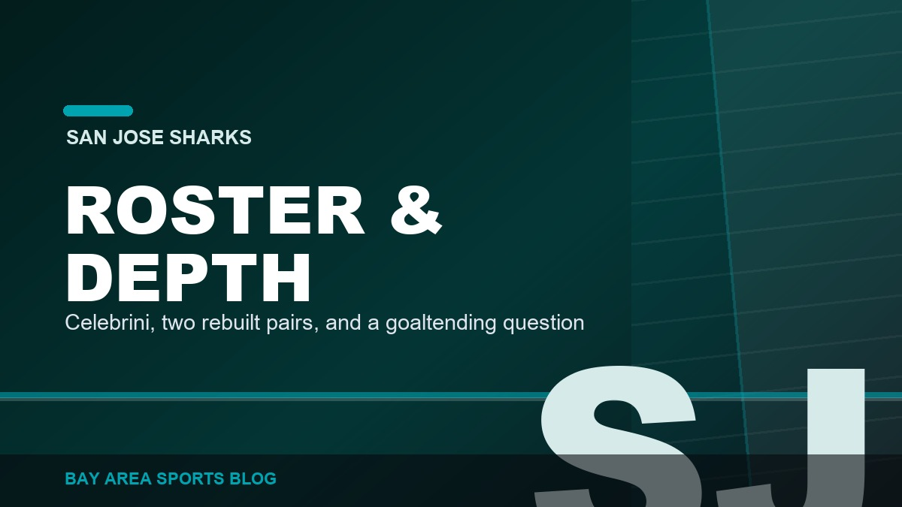
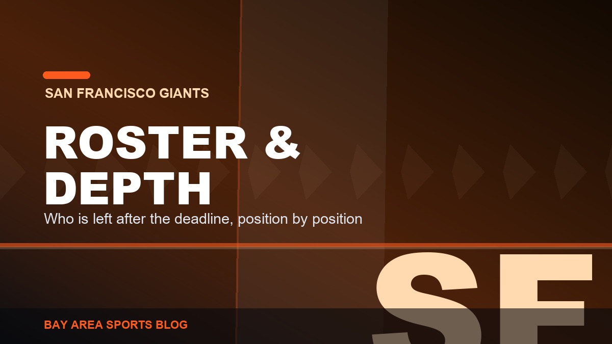
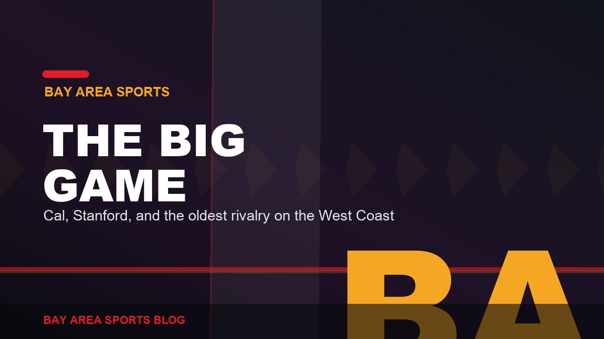

Latest Stories, page 3
Everything we have published, newest first. Opinion, recaps, history, and columns across every Bay Area team.

Everybody Laughed at the Niners for Taking Stribling. They Are Not Laughing Now.
Draft night called it a reach and handed out C grades. One camp and one preseason game later the kid looks like the best rookie receiver in football.

The Warriors Cling to the Past Because They Cannot Build a Future
Wiseman, the two timelines, Poole, Kuminga, Moody. A decade of draft capital went into that list, and the 2026-27 plan is still a 38-year-old Curry and whichever veterans took the minimum.

Kyle Shanahan Needs to Win the Ring This Year. Say It Out Loud.
Year ten. Two Super Bowls lost, both to the same team. The roster is built, Purdy is peaking, Deebo and Evans are on short deals, and the excuse supply has finally run out.

The 49ers Sat Everybody and Lost by Six. The Raiders Played Everybody and Lost by Thirteen.
Shanahan hid every starter in a 19-13 loss to Tennessee, Rourke went 12-of-14 and Stribling caught seven, and the Raiders played Cousins and the No. 1 pick and still lost 27-14 at home.

Giants 4, Astros 1: Carson Whisenhunt Was Worth the Wait
Five and two-thirds of one-run ball from the kid, a Bryce Eldridge homer off Hunter Brown, ten outs from the bullpen with nobody past first, and win number fifty. 50-70.

Astros 2, Giants 1: Six Shutout Innings, One Drop, One Bad Back
Adrian Houser gave us six shutout innings on seventy-three pitches, a rookie dropped a routine fly ball in the seventh, and Willy Adames left with back spasms. 50-71.

Rays 12, A's 4: Six Home Runs, Two of Them From a .216 Hitter
Taylor Walls had no homers all season and hit two. Nick Martinez threw a complete game with no walks. Twenty-two runs allowed in two nights. 47-73.

The 49ers Waived Junior Bergen Again, and Kept the Left-Footed Punter
Three names off the ninety the day before the preseason opener, and three one-year deals in their place. Nobody created space. Everybody got swapped.

Tigers 3, Giants 1 (F/10): We Wasted Eight Innings of Logan Webb
Eight innings, four hits, no earned runs, and the offence handed him one run on an infield single. Lost it in the tenth. Twenty games under .500.

Don Nelson Is Gone at 86, and This Region Never Properly Thanked Him
Run TMC, We Believe, the point forward, and the man who did not play rookies handing a 21-year-old Stephen Curry the whole offence. We lost a good one.

A's 4, Red Sox 3: A Series Win, Their First Since Mid-June
Max Muncy doubled off the Monster against Chapman in the ninth. Jeff McNeil got his 1,000th hit. Jacob Wilson set a major league record for shortstops.

The 49ers Are Down Four Running Backs, Bosa Is Sore, and the Only Good News Is George Kittle
McCaffrey sat out with tightness, the three backs behind him are hurt, the team auditioned strangers on a Monday, and Bosa has not been in pads in a week.

Roupp Showed Up Vitello on the Mound, and That One Moment Explains This Whole Season
He walked three straight, glared at his manager, shook his head and waved him back toward the dugout. Vitello called him the exact kind of guy you want to coach. That is the entire problem.

The 49ers Defense Won Saturday, and Shanahan Is Coaching the Preseason Opener
The defense got the better of Purdy, Shanahan watched from behind the sunglasses, and he is running the sideline himself against Tennessee on Thursday.

What $147 Million Actually Bought the Warriors
A look at the 2026-27 Warriors cap sheet: what Curry, Butler and Green cost, and why the rest of the roster is minimum contracts and draft picks.

The 2026-27 Warriors: What This Roster Actually Is
What the 2026-27 Warriors realistically are: the Curry-Butler-Green core, the injury questions, the cap reality, and the range of outcomes for the season.

Sutter Health Park: What It Is Like When MLB Plays in a Triple-A Yard
Sutter Health Park by the numbers: capacity 14,014, the dimensions, the wind, and why it produces the second-highest home run rate in Major League Baseball.

Stephen Curry by the Numbers: The Records He Already Owns
Stephen Curry's career records: 4,248 three-pointers, the night he passed Ray Allen, the first player to 4,000, and how far ahead of the field he actually is.

Stanford vs Hawaii, Week 0: Preview, Keys and What to Watch
Stanford vs Hawaii preview for Week 0 on 29 August: kickoff time, the 2025 rematch, the quarterback situations, the keys, and what each team has to prove.

The Stanford Axe and Its Long Criminal History
The Stanford Axe began as a yell leader's prop in 1899, was stolen repeatedly by both schools, and has gone to the Big Game winner since 1933.

Stanford Hands the Program to Tavita Pritchard
Tavita Pritchard takes over on The Farm in year two of the Andrew Luck era, with Michigan transfer Davis Warren at quarterback and a Week 0 opener.

Stanford's 2026 Schedule, Game by Game: Where the Season Turns
Every game on Stanford's 2026 schedule, from the Week 0 Hawaii opener to the Big Game at Cal, and the stretch where a bowl bid is actually won or lost.

The Sharks 2026-27 Schedule and Season Hub
The San Jose Sharks 2026-27 season hub: schedule, opening night, the storylines that decide the year, and links to our coverage as it publishes.

The Sharks Roster and Depth Chart for 2026-27
The San Jose Sharks 2026-27 roster and depth chart: projected forward lines, defence pairs, goaltending, and every move made in the 2026 offseason.

Thirty-Five Years, One Final, No Cup: The Sharks History
The San Jose Sharks franchise history: the 1991 expansion, the 2016 Stanley Cup Final, the 2019 Game 7 comeback, and why they have never won a Cup.

Oracle Park and McCovey Cove: How the Ballpark Actually Plays
How Oracle Park actually plays: the dimensions, the wind, McCovey Cove, splash hits, and why it suppresses home runs more than almost any park in baseball.

Oracle Arena: How Roaracle Became the Loudest Building in the NBA
Oracle Arena explained: the 1966 opening, the Roaracle years, three Warriors titles, the last game in June 2019, and what the building is used for now.

The Oakland Coliseum: What It Was and What Happens to It Now
The Oakland Coliseum explained: the 1966 opening, the Raiders and A's years, the Mount Davis renovation, the final MLB game, and the redevelopment now.

What the Bay Area Actually Lost When the A’s Left Oakland
The Oakland Athletics legacy: three straight titles in the 1970s, the Bash Brothers, the twenty-game streak, and what the Bay Area lost when they left.

Macklin Celebrini: The Records, the Contract, Where He Ranks
Macklin Celebrini by the numbers: the 115-point franchise record season, his NHL-high $18.8 million contract, and how his start compares.

Where the Giants Rebuild Actually Stands After the Selloff
After the 2026 deadline selloff, what the Giants roster actually is, what came back, and what has to happen in 2027 for any of it to matter.

The 2026 Giants Season, Game by Game
The 2026 Giants season in order: the July collapse, the deadline selloff, and every recap and column we published along the way.

The Giants Roster and Depth Chart After the Deadline
A position-by-position look at the Giants roster after the 2026 deadline: who is left, who plays every day, and where the depth genuinely ran out.

Candlestick Park: The Wind, The Catch, and the End of the Stick
Candlestick Park explained: the wind, the 1989 earthquake, The Catch, the Giants and 49ers years, the 2015 demolition and the site's redevelopment.

Cal and Stanford Play in the ACC Now. Here Is What That Cost.
What the move from the Pac-12 to the ACC actually changed for Cal and Stanford: the travel, the kickoff times, and the local rivalries that died.

Tosh Lupoi Comes Home, and Cal Might Actually Be Dangerous
Tosh Lupoi takes over at Cal with Jaron-Keawe Sagapolutele returning at quarterback and an ACC schedule that misses Miami, Louisville and Florida State.

Where Brock Purdy Actually Ranks, and What He Can Still Reach
A running look at where Brock Purdy sits historically: career passer rating, the records in reach, and the milestones that are realistic rather than hype.

The Big Game: The Oldest Rivalry on the West Coast
The Cal-Stanford Big Game dates to 1892, produced The Play in 1982, and is decided every November for possession of the Stanford Axe. Here is the story.

Every Bay Area Franchise Move: The Teams That Left and Nearly Left
A reference list of every Bay Area sports franchise relocation: the Raiders twice, the Athletics, the Warriors, the 49ers, and the moves that were blocked.

Every Bay Area Championship: The Complete List, Team by Team
A complete reference list of Bay Area championships: 49ers, Warriors, Athletics, Giants, Raiders, Earthquakes and Sharks, with every title year.